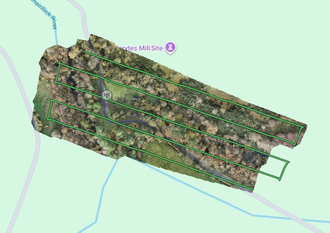
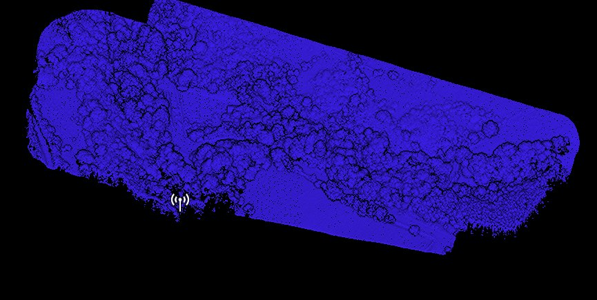
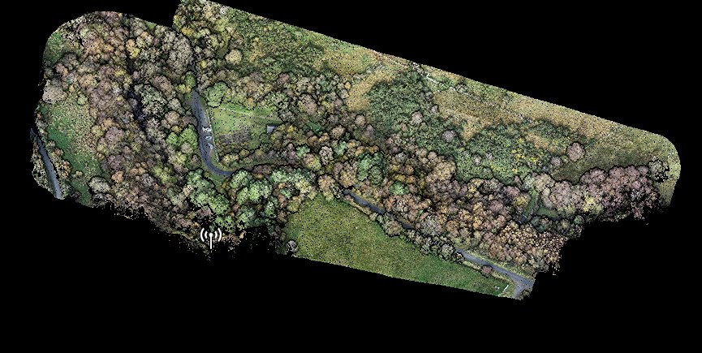
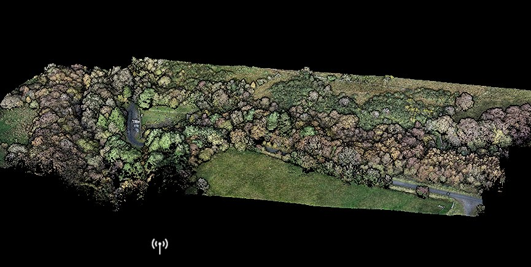
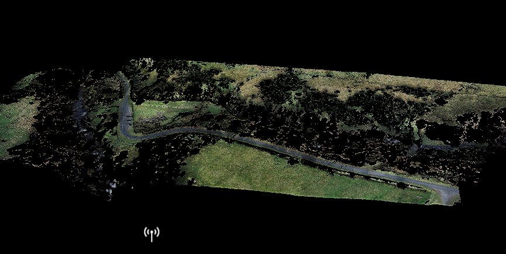
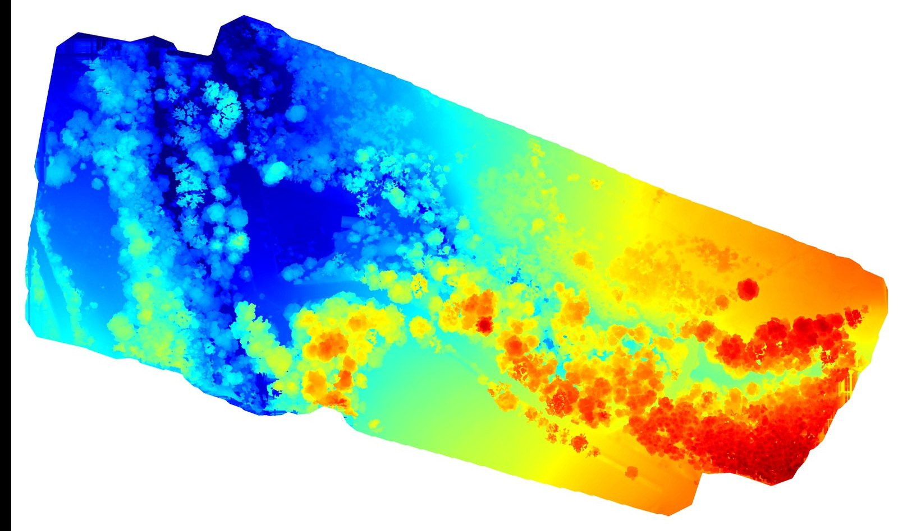
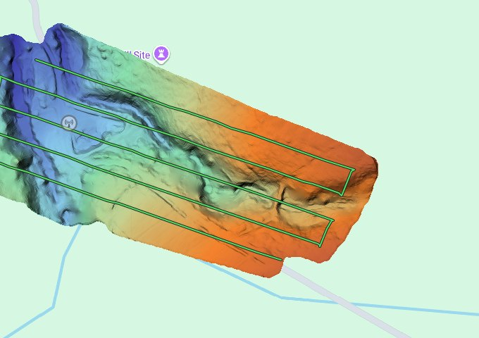
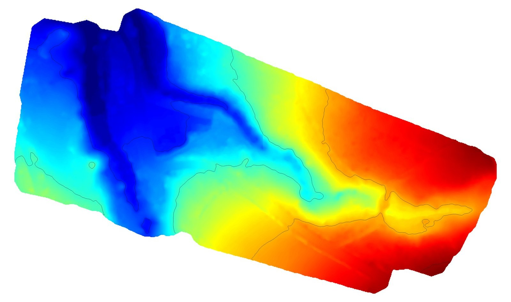
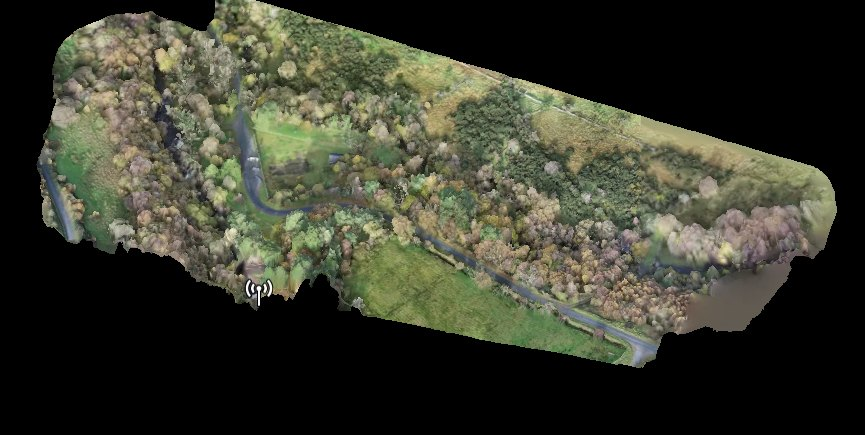

Seeing the ground through the trees.
Most of the Gleniff site is under woodland. A photograph from above shows only the tops of the trees. To model the ground you'll build on, the site was surveyed with a drone-mounted laser scanner, a lidar, which can find the ground through gaps in the canopy.
What lidar is · The flight · Point cloud · Removing trees · DSM and DEM · To your model · How good · Lidar or splat
- Surveyed
- October 2025
- Area
- about 5 ha
- Aircraft
- DJI Matrice 300 RTK
- Sensor
- DJI Zenmuse L1
- Flight
- 1 flight · ~20 min
- Laser pulses
- 240,000 a second
Measuring with light
Lidar stands for light detection and ranging. The scanner fires short pulses of laser light and times how long each takes to bounce back. Light travels at a known speed, so the time gives the distance. Combine that with exactly where the drone was and which way the laser pointed, and every echo becomes a point in 3D space.
Why it works under trees
A tree canopy is full of small gaps. With hundreds of thousands of pulses a second, enough of them find a way through to the ground for software to build a continuous ground surface underneath. A photograph can't do that: it only sees what's on top.
The survey used dual return: each pulse could record a hit on the canopy and a second hit further down, often the ground. The scanner used a non-repetitive pattern, sweeping a rosette-shaped path that fills in more of the view the longer it looks.
The scanner: DJI Zenmuse L1
| Laser points per second | 240,000 single return · 480,000 multiple |
| Returns per pulse | up to 3 |
| Field of view (non-repetitive) | 70.4° × 77.2° |
| Accuracy at 50 m | 10 cm across · 5 cm in height |
| Camera | 1-inch sensor, 20 MP |
Manufacturer's published figures: DJI Zenmuse L1 specifications.
One flight, four passes
The drone flew a planned route of parallel lines along the length of the site, with the lidar and the camera recording together. Its position came from network RTK through ATU Sligo, a live correction service that keeps a drone's location accurate to a few centimetres.


| Flight | Value |
|---|---|
| Date and conditions | October 2025, midday · overcast · full leaf cover |
| Planned height | 30 m above the take-off point |
| Average height recorded | 58.6 m |
| Average speed | 3.7 m/s |
| Overlap between passes | 85% (lidar and photos) |
| Time recording | 8 min 25 s (about 20 min in the air) |
| Scan | non-repetitive · dual return · 240 kHz |
| Positioning | network RTK (ATU Sligo) · fixed solution 100% of the flight |
Millions of measured points
The result of the flight is a point cloud: every laser echo as a dot with a position and height. The same cloud can be coloured in different ways to show different things. Switch between them.

Ground points and everything else
Software sorts the cloud into ground and not ground. Drag the handle: with the trees, then the ground points only. Where the canopy was thick, the ground points thin out and the software has to fill the gaps between them.


All pointsGround onlyThe settings used at Gleniff
| Setting in DJI Terra | Value | What it means |
|---|---|---|
| Scene | Gentle slope | tuned for ground that isn't cliff-like |
| Building max diagonal | 20 m | size of the cells used to find the first, lowest ground points; anything smaller than this, like a tree or shed, can't be mistaken for ground |
| Iteration angle | 6° | how steeply a new point may rise from the ground already found |
| Iteration distance | 0.5 m | how far above that ground a new point may sit |
Ground classification took about a minute of computer time. The settings are a balance: too strict and real banks get cut off; too loose and low bushes become "ground".
Two height maps of the same place
From the points, the software makes two height maps. The DSM (digital surface model) follows the top of everything: trees, the stable roof, the ground where it's open. The DEM (digital elevation model) uses only ground points: the bare earth with the trees taken away. The DEM is the one your contours and model come from.

DSM · with trees · 145–190 mDEM · bare earth · 144–180 mblue low → red highWhat the numbers mean
The DSM runs from about 145 to 190 m, the DEM from about 144 to 180 m. The difference at the top is the height of the trees on the upper slopes.
These heights are measured from the WGS 84 ellipsoid, a mathematical shape used by GPS, because the survey was output in WGS 84 / UTM zone 29N. They are not the heights on Irish maps, which are measured from mean sea level at Malin Head. On this website, levels are given relative to the lowest point of the survey.
DEM exported at 1:500 scale. Orthophoto resolution 1.23 cm per pixel.
Height map to board
The DEM is a grid of heights, like a photograph where each pixel is a level instead of a colour. Everything else on this website is made from it.
- DEM

DJI Terra exports the DEM as a GeoTIFF, a georeferenced image file.
- Contours

Terra can draw contours straight from the DEM. Its preview uses a 10 m interval; this website and the model use 1 m. See Reading contours.
- STL
In QGIS, the DEM was cropped to the site and turned into an STL, a 3D mesh file, scaled to 1:200.
- Board
The STL was sliced into 5 mm layers, one per metre, for the laser cutter: the site model kit, and the your-model tool for your own square.

Know the limits of your data
Every survey has an accuracy, and a good designer knows it before relying on a number.
- Position. The drone held a fixed RTK position for the whole flight. The scanner's published accuracy is about 10 cm across and 5 cm in height at 50 m.
- No ground checks. No ground control or check points were surveyed, so the absolute position and level haven't been checked independently. Treat levels as good to within some centimetres relative to each other, and the absolute height as approximate.
- Under thick canopy there are few ground points, so the ground there is filled in between them and smoother than reality.
- Water absorbs laser light, so the river surface and bed are poorly recorded.
- Steep gorge sides are seen at a glancing angle and may be rounded off.
- Small things such as walls, steps and foundations can fall between points, which are spaced about 10 cm apart.
| Processing in DJI Terra | Time |
|---|---|
| Point cloud (positions, optimising, colouring) | 18 min |
| Ground classification | 1 min |
| DEM | 8 s |
| 2D orthophoto map | 7 min |
| 3D textured mesh | 34 min |
DJI Terra Education on a workstation with an Intel i9-10900X (20 cores), NVIDIA RTX A4000 and 64 GB of memory. Times from Terra's quality report.
Two ways of capturing the same place
Photographs from the same flight were also used to make a 3D Gaussian splat of the site, a photo-real model you can fly through. You can explore it in the Cesium view, read how the splat was made, and cut sections through it on the Sections page. The two methods answer different questions.
Lidar
- Measures: every point has a reliable position and height.
- Sees the ground through gaps in trees.
- Gives you contours, sections, levels and the model.
- Looks abstract: dots, not surfaces.
- Specialist sensor and processing.
Gaussian splat
- Looks real: light, colour, texture and atmosphere.
- Made from ordinary photographs.
- Great for experiencing a place and recording its character.
- Only sees surfaces the camera saw, so no ground under the canopy.
- Not made for measuring; sizes and levels aren't reliable.
Use the lidar for the facts of the site (Task C) and the splat to help you feel and record its character (Task B).
Survey flown and processed by Ray McNally, ATU Sligo Department of Architecture, with a DJI Matrice 300 RTK and Zenmuse L1, processed in DJI Terra. Images from DJI Terra and its quality report.